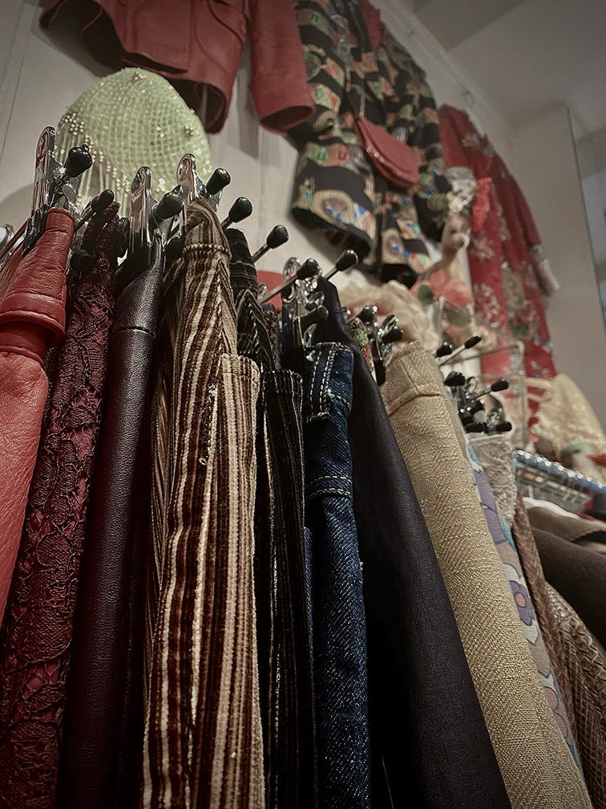
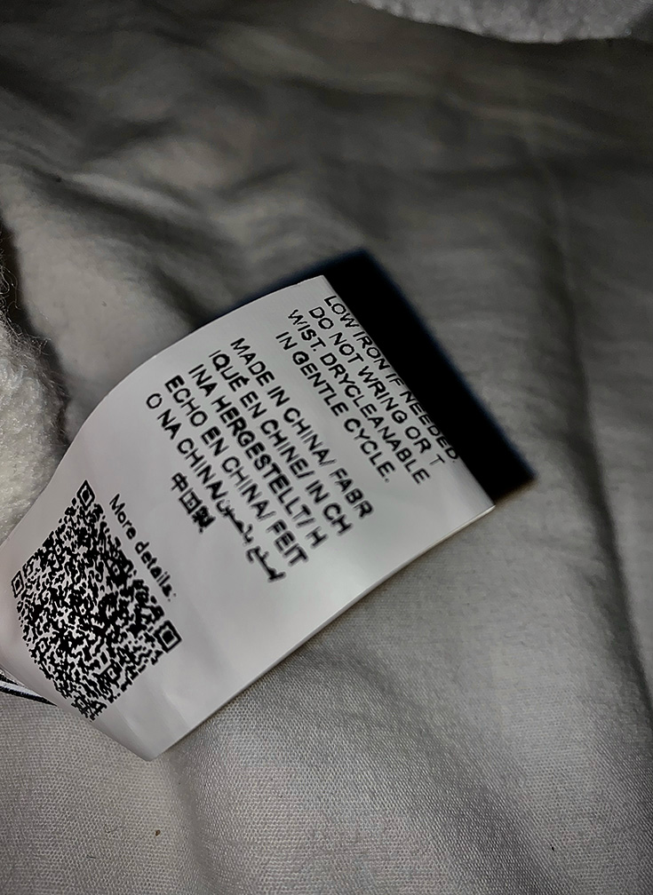

Wat is fast fashion?
Je hebt nu vast een paar dingen gelezen over fast fashion en waarom vintage shoppen een goeie manier is om dit tegen te gaan.Fast fashion vertaald naar het nederlands staat voor snelle mode. Wat hier mee bedoeld wordt is dat er per dag miljoenen kledingstukken worden gemaakt voor over de hele wereld. Maar wat is fast fashion nou eigenlijk?
Wat is het?
Fast fashion is een goedkopere versie van wat je kan zien op catwalks, in mode tijdschriften, maar ook wat je beroemdheden en influencers ziet dragen. Dit gaat dan op op zo'n grote en snelle school dat het de maatschapij kan bijhouden. Het idee is om het nieuwste zo snelmogelijk op de markt te hebben, zodat kopers nog geintereseerd zijn en met deze trend mee te kunnen gaan. Uiteindelijk wordt het na een paar keer gedragen te zijn weer weggegooid en vervangen voor wat nieuws, omdat het standaard van vandaag is om relevant te blijven en mee te gaan met de mode.


Waarom is het ontstaan
Voor heen werd er eigenlijk alleen kleding gekocht als dat echt nodig was. Denk hier bij aan verschillende seizoenen en te groot geworden voor je kleding, maar tegenwoordig is dat niet meer zo. Dit komt omdat kleding goedkoper werd en kleding trends sneller veranderde dan daar voor, hierdoor werd voor veel mensen kleding kopen een weekelijkse of maandelijkse hoby. Niet alleen in winkels maar ook online. Om dit bij te houden moest er steeds sneller en meer kleding gemaakt worden, zodat ook jij mee kan doen.
Vervuilend
Omdat fast fashion zo snel wordt geproduceert neemt het ontzettend veel afval met zich mee. Er wordt veel overgeproduceert en over geonsumeerd waardoor fast fashion een van weerelds grootste vervuilers is. Het maken van goedkope stoffen nemen veel giftige stoffen met zich mee die uiteindelijk belanden in het water en de lucht. Dit komt door het soort materiaal en verf. Het materiaal dat veel gebruikt wordt voor goedkope kleding is polyester. Deze stof is gemaakt van aardolie. De microdeeltjes van deze stof komen als stukjes plastick in onze oceanen dit kan komen door productie, maar ook als je het zelf thuis wast of als het nat wordt.
